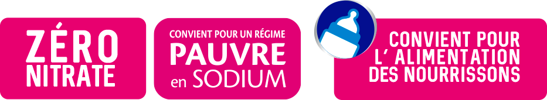

Zéro nitrate, Pauvre en sodium et faiblement minéralisée l'eau minérale naturelle de Wattwiller peut être consommée au quotidien et à tout âge, y compris par les personnes les plus fragiles.
L'eau minérale naturelle de Wattwiller détient l'une des plus faibles teneur en sodium du marché
Tout commence ici. C’est au cœur du Parc Naturel Régional des Ballons des Vosges sur un Site Natura 2000, que l’eau minérale de Wattwiller prend sa source.
Cirques glaciaires, lacs, hautes-chaumes et forêts, s’entremêlent ici dans une rare harmonie. À lui seul, le massif forestier couvre les deux tiers de ce territoire préservé.
Partez à la découverte de cette nature préservée en empruntant le Sentier Permanent de Wattwiller.
Découvrir le sentier permanent Wattwiller
Depuis les sommets des Vosges, les eaux s’infiltrent lentement sous terre par les fissures de la roche. Commence alors un voyage souterrain de plusieurs centaines d’années qui offre à l’eau minérale naturelle de Wattwiller sa pureté originelle préservée. En effet trois facteurs combinés (une épaisse couche d’argile, une source artésienne, une profondeur de captage à 150 m sous terre) constituent de véritables boucliers naturels contre les atteintes extérieures.
Grâce à sa pureté originelle reconnue par l’Académie de Médecine, l’eau minérale naturelle de Wattwiller est recommandée pour l’alimentation des nourrissons.
Pourquoi choisir une eau sans nitrate ? Une eau, des eaux ? Découvrez la différence entre l’eau minérale naturelle, l’eau de source et l’eau du robinet.et cumulez vos achats pour profiter de lots exepionnels toute l'année.
Rejoindre le club maintenantReconnue pour sa pureté, l’eau minérale naturelle de Wattwiller est également pauvre en sodium (0.003g/l soit l’une des plus basses teneurs en sodium). Idéale pour limiter sa consommation de sel au quotidien, Wattwiller est donc recommandée aux personnes suivant un régime pauvre en sodium ou souffrant d’hypertension artérielle. Sa faible teneur en sodium lui confère également un goût neutre et équilibré qui met en valeur les saveurs qu’elle accompagne.
En savoir plusPlusieurs études dévoilent aujourd’hui qu’une consommation de sel trop élevée induit systématiquement une augmentation de la pression artérielle et peut, à terme, entraîner des troubles cardiovasculaires.
Wattwiller s’engage aux côtés de la FRHTA pour une baisse de la consommation de sel en France.
Wattwiller, l’eau minérale naturelle Zéro nitrate et pauvre en sodium, peut être consommée au quotidien et à tout âge, y compris par les personnes les plus fragiles. Sa faible minéralité lui confère un goût neutre et équilibré, qui met en valeur les saveurs qu’elle accompagne.
Produits disponibles :
Les informations recueillies vous concernant font l’objet d’un traitement destiné à la société Les Grandes Sources de Wattwiller dans le cadre d’envois réguliers de newsletters La durée de conservation des données est de 3 ans. Vous bénéficiez d’un droit d’accès, de rectification, de portabilité, d’effacement de celles-ci ou une limitation du traitement. Vous pouvez vous opposer au traitement des données vous concernant et disposez du droit de retirer votre consentement à tout moment en envoyant un email à l’adresse wattwiller@wattwiller.com. Vous avez la possibilité d’introduire une réclamation auprès d’une autorité de contrôle.En savoir plus sur wattwiller.com/mentions-legales/.